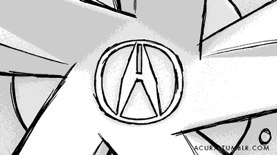
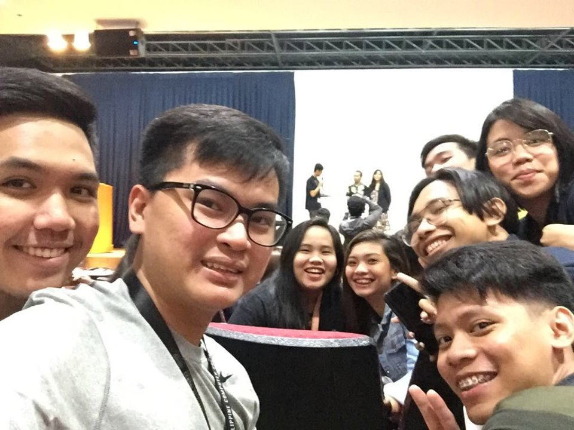

Reflections
R1: 1st Week
The first week started out great. We had exciting activities such as sharing our favorite application and designing an interface for a 1000 floor elevator which is really challenging in a way that it helps us to think critically.
Our professor was able to guide us in thinking out of the box. In this class we are not limited from the ideas that we thought of, we help each other by giving suggestions. I look forward in designing more user interface with a given scenario. In short critical thinking and creativity is what you need to be able to adapt in this class.


R2: Need Findings and Paper Prototyping
There are various ways to find product opportunities, different approaches in a technological manner, market approaches and an approach which mainly focus on the user.
Need finding is basically satisfy the user needs. We need to think about a product that stands out in a large market. Need finding is one the process that helps the developer to initialize and understand what the user needs. Understanding needs are important because it leads to better development of the product. In order to do that we must focus on the needs and not the solutions because it will limit us from opportunities. We must also collect various type of data, including photos, videos, records and data. In making an efficient product, we don’t stop right after finding the needs of the users. We must be able to conceptualize and explore variety of different approach, this would help us visualize and test various ideas. It is a method of brainstorming, designing, and testing.
It helps provide an early feedback in the development process before we implement. In this way we would be able to correct the things as we go or between user tests. It also doesn’t need any technical skills which can initiate better synergy from you and your team with different discipline.

R3: First Web Application using Github and Heroku
I’ve made a webpage like this before back in high school, the webpage is also about us. HTML is the first basic computer language that I learned. It took me some time to recall the learnings that I got from high school. Researching helped me a lot to replenish in making an HTML web page.
It was fun and exciting especially that the webpage is about us and we are free to design our webpage in any aspect that we want. I tried to be creative in making my webpage and asking my classmates to critique my worked helped me in improving my webpage. I had no problem in creating a web page but I struggled on the uploading process of my work in Github and Heroku. That’s why I asked helped from a classmate and I was able to understand it clearly and tried to help other classmates who are struggling in uploading their work.
I look forward in creating more web pages with different applications and with different computer languages. With these I would be able to expand my skills and my landscape of learning. I like to explore things which I’m interested about. I look forward in creating and designing more web pages.

R4: Userinterface - Worst UI Practice
I really had fun and got annoyed in this activity. It was so irritating that I keep on refreshing the web page because of a prompt saying that my time is already done.
I keep on trying but I also keep on returning from where I started, I can’t even pass through the other step of signing up. Until I tried to calm my self and understand thoroughly. I learned in closing the prompt message and surpass my first try in five minutes. After finishing my first successful entry, I uploaded my work in Trello then I tried once more. I was able to finish it in less than two minutes. In this activity you would be able to adore the importance of designing your user interface. As a developer/designer you should be able to put yourself on the user’s shoes. Make your web page or your application as friendly-user as possible.
Avoid the practices of a bad design because this would cause confusions to your user which means to say that your web page or your application would be less efficient and all the contents of your work might be useless.


R5: SoCIT Fest
I am part of the “Junior Philippine Computer Society” organization (JPCS) as an assistant director for finance. Together with my committee, I managed the finances that partakes within the organization. I help my committee in liquidating every transactions of the organization. I carefully took every peso into order to avoid blunders in our financial report.
I also participated in some events like the seminar about the introduction to cloud computing, basketball and Mobile Legends Tournament held by the Gaming Genesis at the Multi-purpose hall. I and my block mates formed a group of five members. John Benedict Cruz, Mark Macatangay, Randreb Bance and Adrian Zuñiga were my allies and we had daily practices. We were able to arrive with the name ASCII in regards to one of the lessons that we had in Computer Organization. Before the Mobile Legends tournament, we had to do some errands as we are all part of the JPCS organization, this is to prepare for upcoming events from JPCS such as the SoCIT Night, it is the last and most awaited by SoCIT students.
My most favorite event was the Mobile Legends tournament because we had the chance to compete with all the team and it’s quite challenging. Fortunately, they changed the rules from single elimination to a round-robin system. We didn’t win the tournament but at least we had fun and it helped us to have room for improvement. I and my team we’ll come back strong next time! I hope that the SoCIT week next year would be more exciting and there would be more interesting events, 
R6: First Half of USERDES
I like how the USERDES class is consistent in keeping the positive energy within the class. The lessons are very interesting, the professor is spontaneous in sharing all about her idea towards the lesson as if it shows how she is well-prepared with the lessons. The class also has challenging activities that will boost your creativity and logical thinking. To be honest the challenges that I encountered throughout the first-half of USERDES is taking so much time in putting details by details in every work that I do. It was also challenging for me to engage with my teammates in coming up the best app that we could think of. Each and everyone of us has great suggestions, it was a challenge for us to collide our ideas together and make the best out of each perspective. Throughout all the learnings and mistakes that I experience it helped me individually and as a team player. Individually by means of skill wise and critical thinking. Team player by means of engaging your thoughts and absorbing other suggestions, in short having synergy. I expect that the final period would still be fun and exciting learning environment. I hope that there would be more group projects because it would be practical because usually developers don’t work alone in making a certain project.


About The Author
I'm a student of Asia Pacific College, currently takingtaking the course of BS in Information Technology specialized in Mobile and Internet.